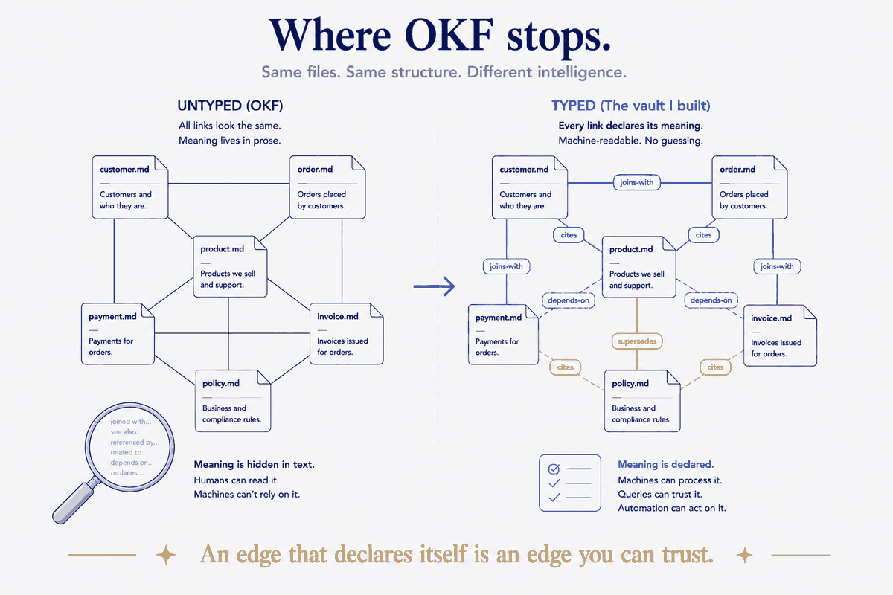
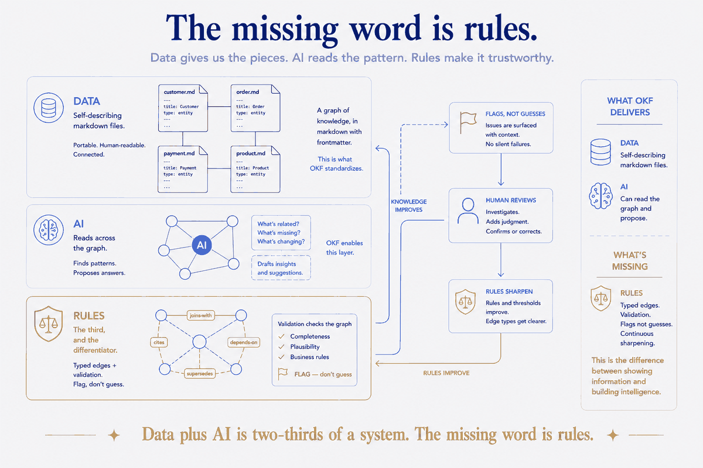

A spec that fits on a page
On 12 June 2026, Google Cloud released the Open Knowledge Format — OKF — at version 0.1. The whole idea is almost aggressively simple, and that simplicity is the point.
A concept is one markdown file. At the top sits a block of YAML frontmatter; below it, ordinary prose. Exactly one field is required: type — a short string that says what kind of thing this is (a table, a metric, a runbook, an API). Everything else — title, description, resource, tags, timestamp — is recommended but optional. Two filenames are reserved: index.md for a directory listing, and log.md for a running change history. A bundle is just a folder of these files, distributed like any repo — git, a tarball, a subdirectory. Concepts link to each other with plain markdown links, and those links turn the folder into a graph.
That's it. No SDK to install, no platform to sign up for, no proprietary file format. The spec's authors are blunt about it: "OKF is not tied to any specific cloud, database, model provider, or agent framework. It will never require a proprietary account or SDK to read, write, or serve." You read and write files like you would in any repository, and any agent that can read files can read your knowledge.
If you've read anything else I've written, you can probably feel why I sat up.
I'd already built this
A while back I wrote a piece called The Vault Is the Data Model. The claim was that a folder of markdown files, each with real YAML frontmatter, isn't a place where you keep a model of your knowledge — it is the model, in exactly the sense a data modeler means the word. Atomic. Self-describing. Open. Queryable. After twenty-five years of modeling data for banks, I'd built one for myself, and it worked like the enterprise kind because it was the enterprise kind, at a different scale.
Line the two up and it's uncanny:
| What I built (and wrote about) | OKF v0.1 |
|---|---|
| One idea per markdown file — atomic building blocks | A concept is one markdown file |
| YAML frontmatter carries the schema, travels with the file | Frontmatter with a required type, optional fields |
| A folder-note that indexes each folder | Reserved index.md directory listing |
| A running log of what changed | Reserved log.md change history |
| Notes linked into a graph you can walk | Markdown links form the concept graph |
| Open, tool-agnostic, versionable in git | Format-not-platform, distributed as a git bundle |
I'm not claiming Google copied my homework. The opposite, and it's more interesting: we converged. So did a lot of people. Andrej Karpathy described almost exactly this pattern back in April — an LLM Wiki, a growing set of markdown pages with wikilinks, where the human curates and the model does the bookkeeping. Anyone who's dropped a CLAUDE.md or AGENTS.md into a repo, or wired an Obsidian vault into a coding assistant, has built a private dialect of the same thing. Google's own framing is honest about this: these hand-rolled files are "compelling" but "bespoke," and "none of them interoperate."
That's what a standard is for. Not a new idea — a shared one. And when independent people keep reaching for the same shape, that shape is telling you something. It's the strongest evidence I know that a folder of self-describing markdown, linked into a graph, is simply the right container for knowledge an AI has to use. Structure beats magic — and here's a whole industry arriving at the same structure from different doors.
So far, so validating. Now the part that matters.
Where OKF stops
Here is the sentence in the OKF spec I keep circling back to:
A link from concept A to concept B asserts a relationship. The specific kind of relationship (parent/child, references, joins-with, depends-on, etc.) is conveyed by the surrounding prose, not by the link itself. Consumers that build a graph view typically treat all links as directed edges of an untyped relationship.
Read that carefully, because it's the whole ballgame. In OKF, every edge is the same edge. A link that means "this table joins to that one on customer_id" and a link that means "see also, for background" are, to any consumer building the graph, indistinguishable. The meaning of the relationship isn't in the structure — it's in the prose next to the link. To recover it, something has to read the sentence and guess.
For a human browsing, that's fine; we read the sentence anyway. But the entire premise of OKF is that a machine consumes this. And a machine handed an untyped graph can see that two things are connected while having no reliable idea how. It's a map where every road is drawn the same width, with the difference between a motorway and a footpath written in tiny letters you have to stop and read at every junction.
This isn't a fringe objection. Six days after launch, someone opened issue #101 on the OKF repo proposing — carefully, backward-compatibly — a way to add optional typed relationships, so a link could declare joins-with: on customer_id in a machine-readable slot instead of leaving it to prose. The community reached for the missing layer almost immediately, because the moment you try to act on the graph rather than just read it, you feel the gap.
And the rest of the data world already lives on the other side of this line. The dbt Semantic Layer defines metrics in typed YAML — dimensions, entities, the works — and exposes them to agents through tools that execute the definition, not describe it. Vault-LD turns markdown frontmatter into typed RDF triples with a shared vocabulary, and pointedly ships an OKF "lifting" profile: keep your OKF bundle exactly as is, add one context file, and its untyped body links become promotable to typed edges. The typed camp isn't hypothetical. It's where machine-actionable meaning already comes from.

The missing word is rules
I've made this argument before in a different frame, and OKF is the cleanest illustration of it I've found.
Every pitch you hear about the near future is "data plus AI." Point the model at the data and let it reason. What almost nobody says out loud is the third word: rules. Structure without rules drifts. A knowledge graph whose edges carry no declared meaning is structure without rules — it looks organized, and it will happily let an AI infer a join that isn't there, follow a "related" link as if it were a dependency, or restate a stale claim as current, with nothing in the structure to say no, that edge doesn't mean what you think.
Typed relationships are the first and most basic of those rules. An edge that declares itself — this is a foreign-key join, this is a citation, this is a supersedes — is an edge a machine can trust without re-reading the prose and hoping. Go one step further and you get validation: rules that check the graph against what's known — does this link point somewhere real? does this join key exist on both sides? does this number contradict something we already hold true? — and, on a mismatch, flag rather than guess. That flag-don't-guess discipline is precisely what an AI writing into your knowledge base needs and precisely what an untyped graph can't provide, because it has no notion of what would be a violation.
This is the part I care about most, and it's where the human stays in the loop by design. You don't review everything the AI touches — you review what the rules flag. When something slips through, you don't just fix the value; you sharpen the rule, so it's caught next time. A double loop: the knowledge improves, and the rules guarding it improve, both steered by a human looking at real output. That's not a person rubber-stamping a model. It's a person steering it, at the one point where steering counts.

OKF gives you the first two thirds of that beautifully — the data (self-describing files) and the AI-readable structure (the graph). It deliberately leaves out the third. And I understand why — v0.1 is betting that adoption comes from being dead simple, and it's probably right. But "simple enough to adopt" and "trustworthy enough to act on" are different bars, and the gap between them is exactly the layer with no name in the marketing: rules.
The shape is right. Finish it.
Here's what I actually think, and I don't want the critique to drown it: OKF is a good thing, and its instinct is correct. Formats outlast the platforms built around them, and a plain-markdown, git-native, no-SDK format for machine-usable knowledge is going to outlast a lot of expensive tooling. The convergence is real. The shape is right. If you're a data or knowledge team wondering whether "a folder of markdown files" is a serious way to give AI context, the answer — now with Google's name on it — is yes.
But don't mistake the container for the system. A knowledge graph you can read is table stakes; a knowledge graph you can act on needs its edges to mean something and its contents to be checked. Type your relationships. Add the validation rules. Keep a human on the flags. That's the difference between structure that drifts and structure that compounds — and it's the half of the problem that a one-page spec, by design, hands back to you.
Google standardized the folder. The rules are still yours to build. That was always the part that mattered.